4 km
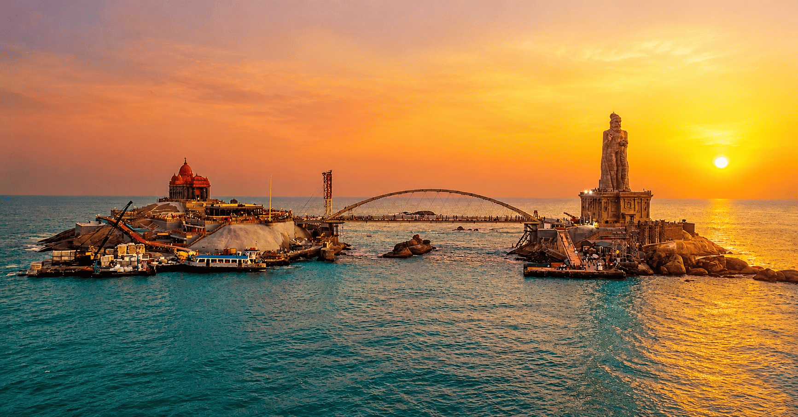
Kanyakumari Beach
The southernmost tip of India, where three seas meet — famous for both sunrise and sunset.
Around Sri Krishna Grand Rooms and Hall

The southernmost tip of India, where three seas meet — famous for both sunrise and sunset.
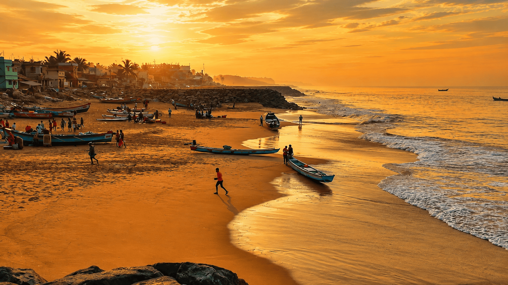
The best-known spot to watch the sun break over the Bay of Bengal.
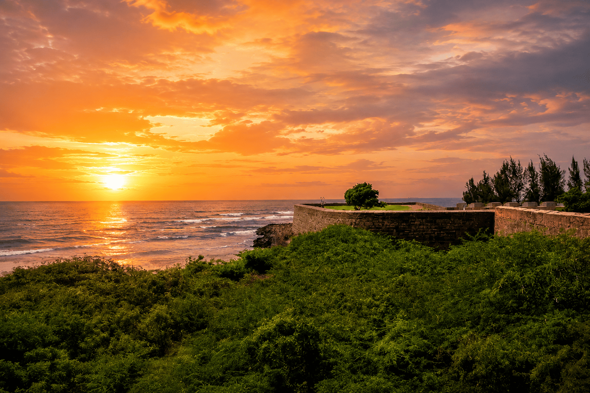
Watch the same sea turn gold in the evening from the Arabian Sea side.
A quieter shoreline beside the 18th-century Vattakottai Fort.
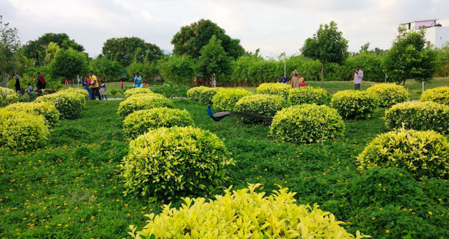
Boating, gardens and a butterfly park — an easy family afternoon.
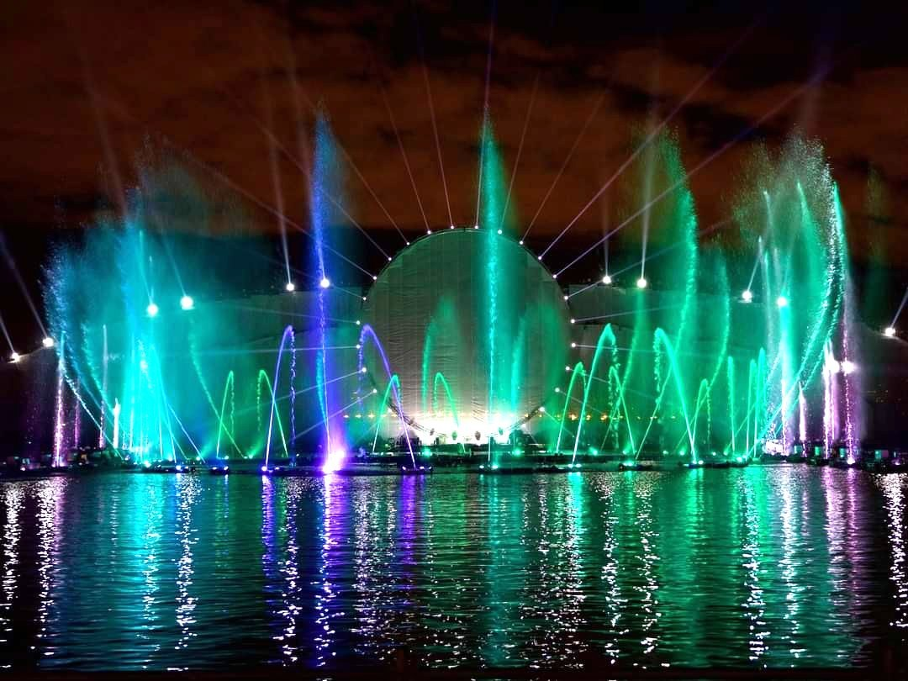
An evening light-and-water show, popular with families.
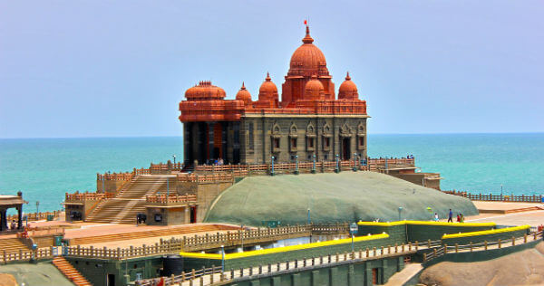
A memorial on a rock island, reached by a short ferry ride.
A 133-foot statue of the Tamil poet, on the same island as the Rock Memorial.
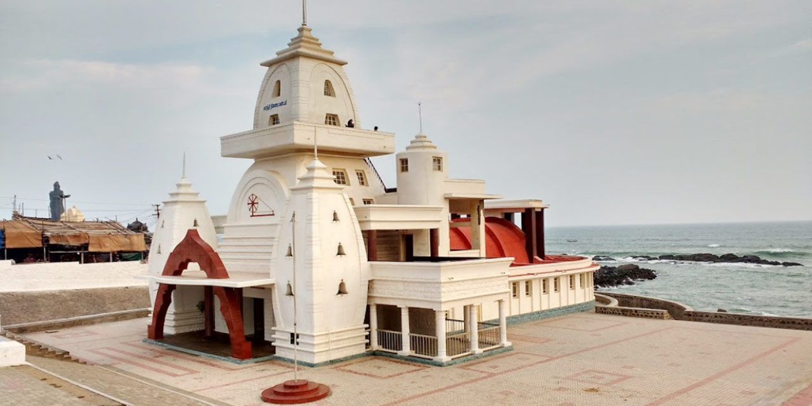
A memorial hall built where Gandhi's ashes were briefly kept.
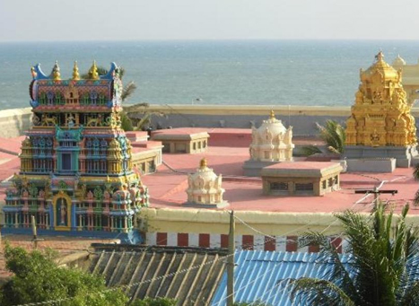
An ancient temple right on the shoreline, open to visitors year-round.
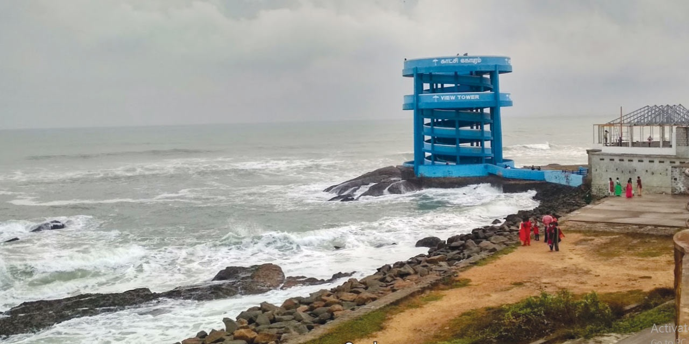
An elevated viewpoint over the confluence of the three seas.
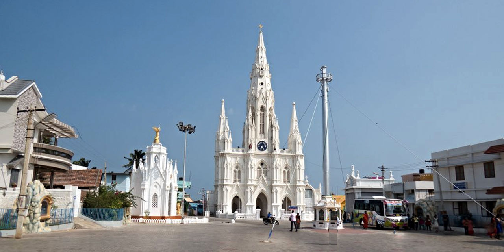
Graceful Christian shrine.
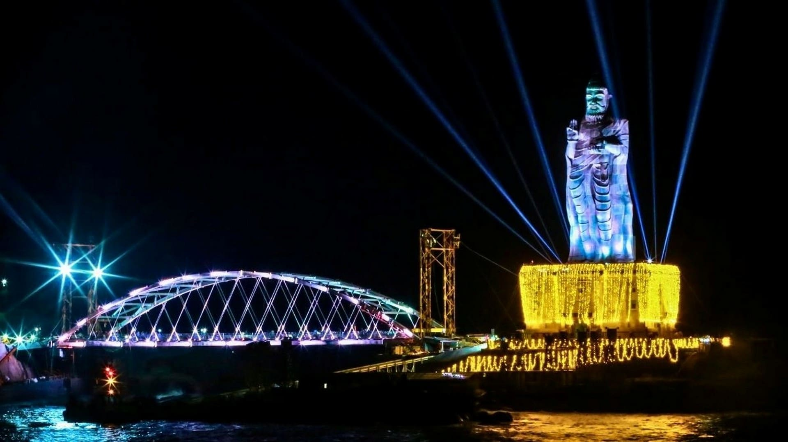
kanya Kumari Famous Glass bridge
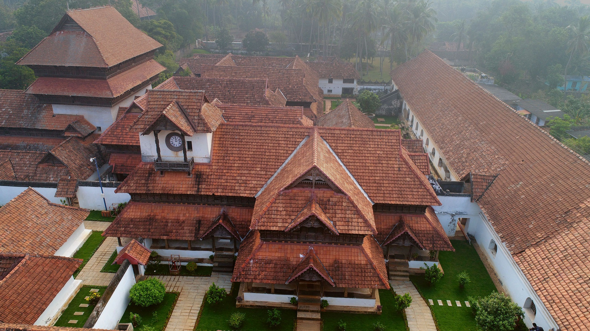
enjoying palce and know about histries.
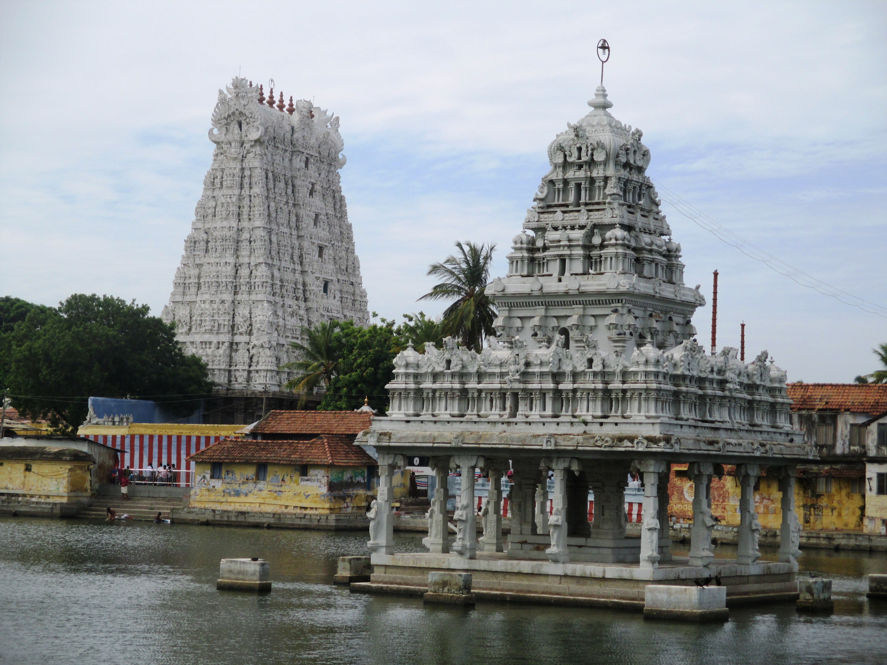
temple and divine
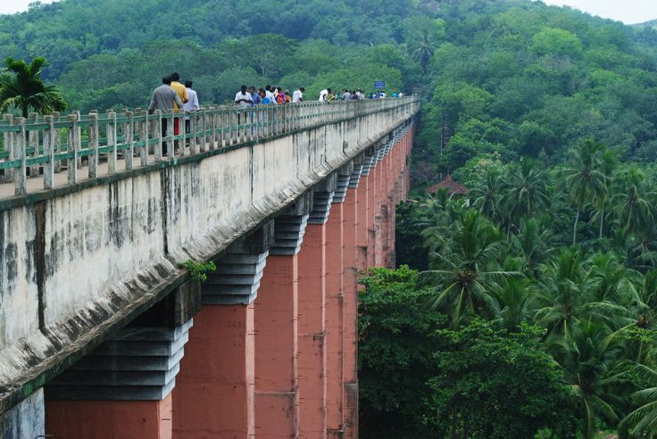
Nature and Iconic Place for visit the nature with bridge
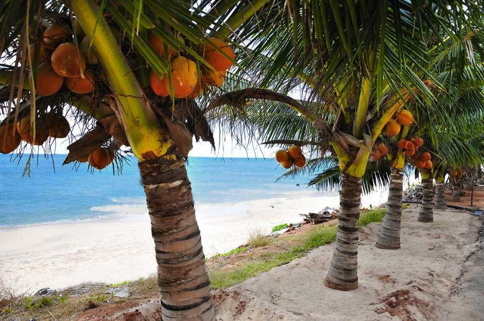
Kanya Kumari femopuse Beach
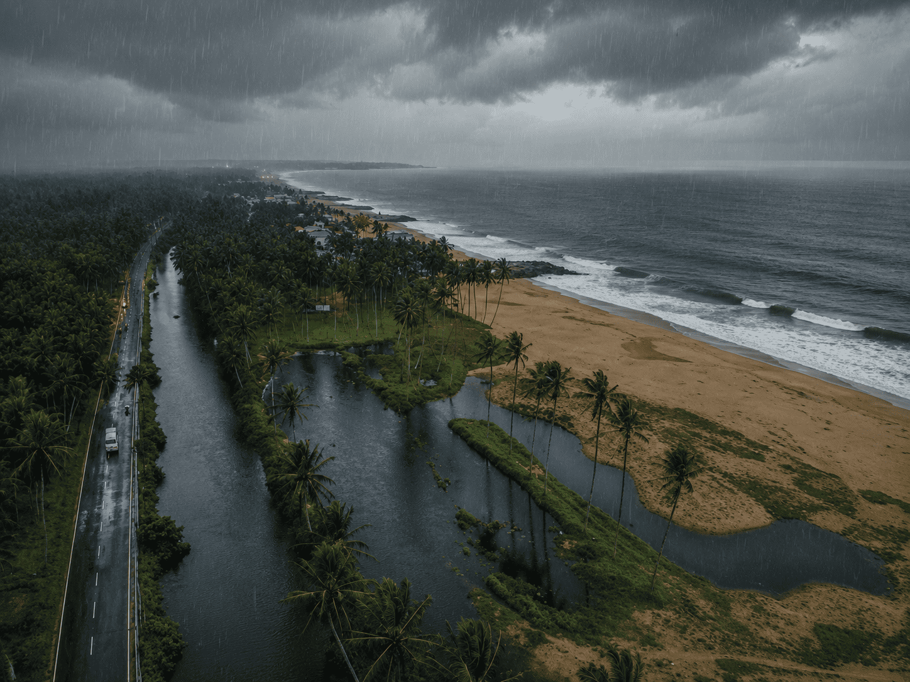
Kanya Kumari femopuse Beach